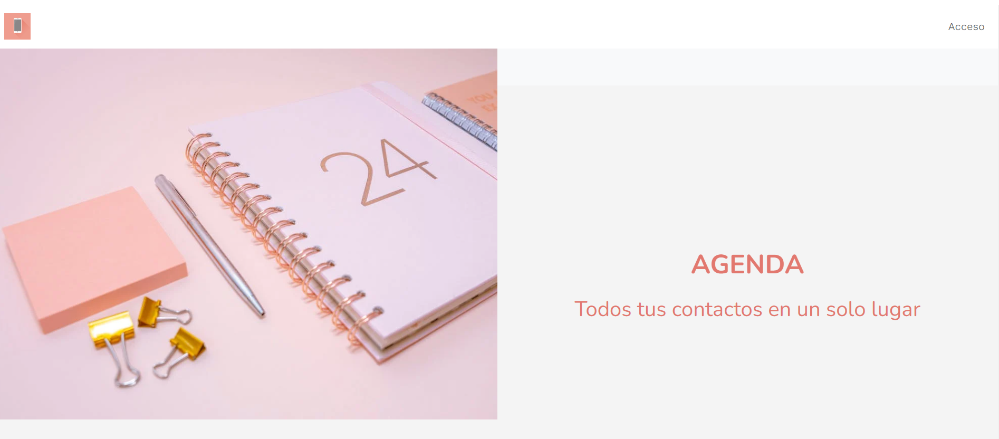
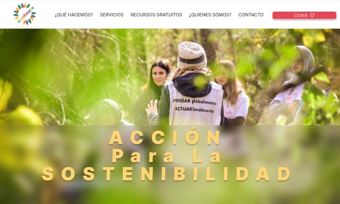

MARÍA CECILIA ORLANDO
Full Stack Web Developer
Sobre mí
Soy desarrolladora web con más de 12 años de experiencia en el sector legal, donde desarrollé habilidades analíticas y atención al detalle. Mi pasión por la programación me llevó a reorientar mi carrera hacia un campo dinámico, donde puedo combinar creatividad y tecnología. Domino tecnologías como HTML, CSS, Flexbox, Grid Layout, JavaScript, jQuery, Angular, NodeJS y React, así como Ruby y Ruby on Rails, utilizando herramientas como Hotwire, Turbo y Stimulus. También tengo experiencia con PostgreSQL, GitHub, Heroku y Visual Studio Code. Me especializo en crear aplicaciones web eficientes y robustas, siempre con un enfoque en la accesibilidad y usabilidad. Mi experiencia en el ámbito legal me brinda una perspectiva única que aplico en el diseño de interfaces que cumplen con normativas y estándares. Estoy emocionada por enfrentar nuevos desafíos y contribuir a soluciones innovadoras. Lista para crecer en el desarrollo web, estoy entusiasmada por formar parte de proyectos que impulsen el cambio.
Proyectos Destacados
SKILL SWAP

Skill Swap es una innovadora plataforma diseñada para empoderar a mujeres latinoamericanas mediante el intercambio de habilidades. En un contexto donde el aprendizaje y el desarrollo personal son fundamentales, Skill Swap ofrece una solución única para conectar a mujeres con diferentes habilidades y conocimientos, facilitando un entorno de colaboración y crecimiento mutuo.Tecnologías Frontend: HTML, CSS, Bootstrap, JavaScript, React Backend: Ruby on Rails Base de datos: Active Record
AGENDA 2024
Este proyecto de voluntariado con Eco House Global se centra en la actualización de su aplicación web, con el objetivo de mejorar su funcionalidad y la experiencia del usuario. Eco House Global es una ONG sin fines de lucro dedicada a la sostenibilidad, que se especializa en educación, comunicación, consultoría, restauración ecológica y voluntariado. En este rol, estoy a cargo del diseño y desarrollo de la nueva interfaz de usuario (UI), lo que me permitirá aplicar y expandir mis habilidades en diseño de interfaces y desarrollo web, al mismo tiempo que contribuyo a una causa que me apasiona. En que colaboro: Diseñar la nueva interfaz de usuario (UI). Implementar nuevas funcionalidades. Mejorar la experiencia del usuario (UX).
ECO HOUSE-Voluntariado
Este proyecto de voluntariado con Eco House Global se centra en la actualización de su aplicación web, con el objetivo de mejorar su funcionalidad y la experiencia del usuario. Eco House Global es una ONG sin fines de lucro dedicada a la sostenibilidad, que se especializa en educación, comunicación, consultoría, restauración ecológica y voluntariado. En este rol, estoy a cargo del diseño y desarrollo de la nueva interfaz de usuario (UI), lo que me permitirá aplicar y expandir mis habilidades en diseño de interfaces y desarrollo web, al mismo tiempo que contribuyo a una causa que me apasiona. En que colaboro: Diseñar la nueva interfaz de usuario (UI). Implementar nuevas funcionalidades. Mejorar la experiencia del usuario (UX).
Habilidades
- Ruby & Ruby on Rails
- Hotwire, Turbo y Stimulus
- HTML, CSS, Flexbox, Grid layout
- JavaScript, jQuery, Angular, NodeJS, React
- PostgreSQL
- Github, Heroku, Visual Studio Code
- Trello, Slack
- Microsoft Office